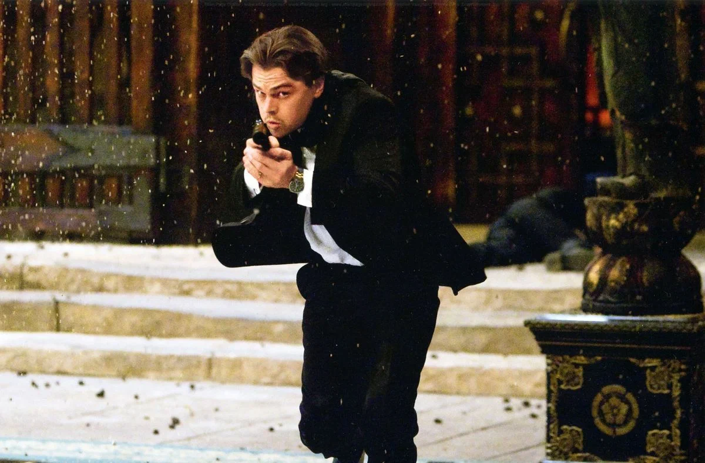
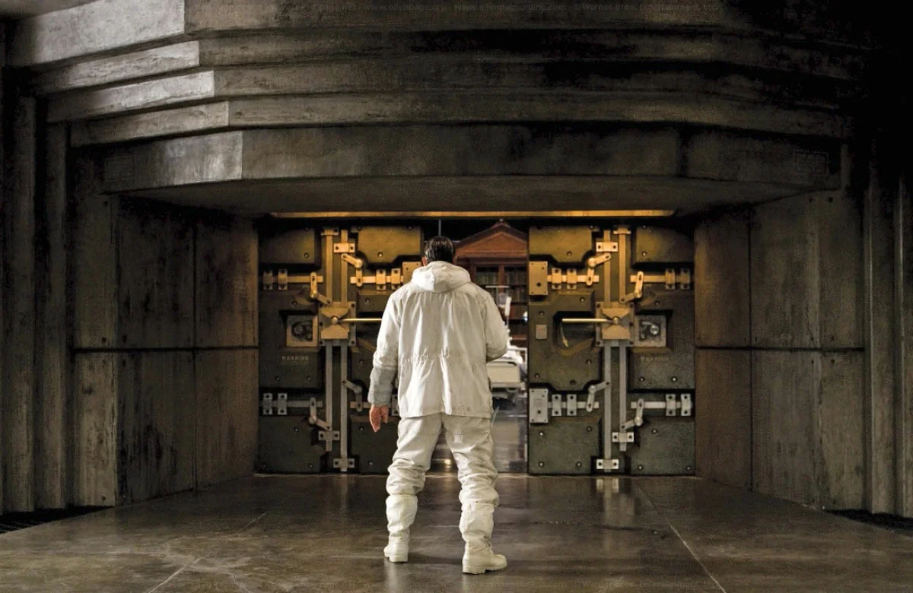

Мои любимые фильмы
Бойцовский клуб
Краткое содержание фильма: Рассказ о том, как офисный работник с кризисом идентичности и харизматичный продавец мыла основывают подпольный бойцовский клуб. Этот клуб быстро растет и приводит к разрушительным последствиям для обоих участников.
Кадры из фильма:
О фильме:
| Год |
1999 |
| Страна |
США |
| Жанр |
Драма, триллер |
| Режиссёр |
Дэвид Финчер |
Остров проклятых
Краткое содержание фильма: Двое американских маршалов отправляются на удалённый остров для расследования исчезновения пациентки психиатрической клиники. Однако по мере продвижения расследования становится ясно, что не всё на острове так, как кажется.
Кадры из фильма:
О фильме:
| Год |
2010 |
| Страна |
США |
| Жанр |
Триллер, детектив |
| Режиссёр |
Мартин Скорсезе |
Начало
Краткое содержание фильма: История о группе специалистов по сну, которые занимаются внедрением идей в подсознание людей. Их самая сложная миссия — внедрение идеи, а не её кража, становится настоящим вызовом.
Кадры из фильма:
|  |
 |
 |
О фильме:
| Год |
2010 |
| Страна |
США, Великобритания |
| Жанр |
Фантастика, триллер |
| Режиссёр |
Кристофер Нолан |